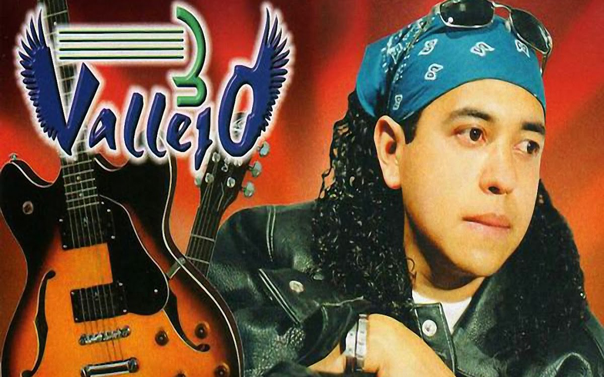

3 Vallejo - Solo Un Adios
Historia De La Banda
El nombre de 3 Vallejo surgió, porque hay un crucero al norte de la ciudad de México, en donde se unen dos avenidas, Av. 3-A y Vallejo, en donde solíamos juntarnos con toda la banda del barrio. 3 Vallejo comienza a finales del año 2000, en ese tiempo nos unimos tres chavos con el afán de formar una banda de rock, con un estilo balada, así empezando a tocar covers en bares, discos; con la alineación del grupo: Antolín T. (Voz y Guitarra), Guillermo M. (Bajo) y Agustín G. (Batería) y al paso del tiempo decidimos montar nuestras canciones para poderlas expresar a nuestro estilo, lo que es la balada rock.